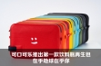
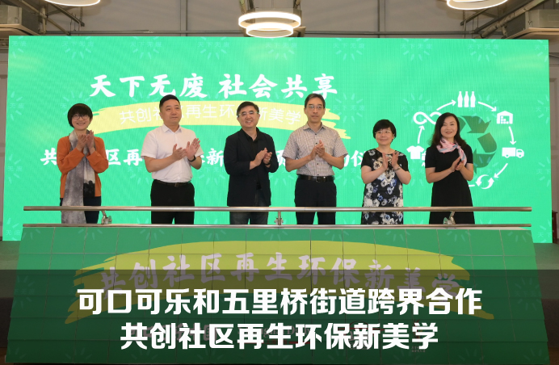
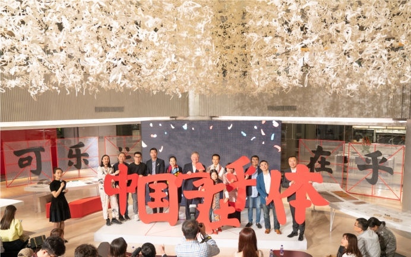
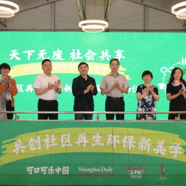
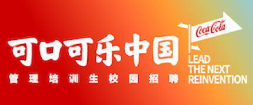

可口可乐和五里桥街道跨界合作 共…
热门精选
- 1历史上的今天，四十年的中国记忆
- 2年终盘点：2018的可口可乐时刻
- 3可口可乐史上第一位首席数字官！25％支出将花在数字领域，还解密线上“冲动购买”
- 4售收一体 “左右未来” 可口可乐创新概念机亮相达沃斯
- 5为了“她”，可口可乐和京东开了一家便利店
- 6可口可乐中国CMO谈在华增长法则，揭秘打造“全民爆款”的思路
- 7中国杰出雇主的员工照有什么不一样？这里有图有真相！
- 8畅饮无负担，万众期待的“网红”汽水轻盈登陆中国！
- 9一份特殊的外卖
- 10可口可乐基金会：十亿回馈，十亿在乎
查看更多

职场人生
2021管理培训生常见问题Q&A
可以关注可口可乐中国官方微信 (微信号coke1886) 以及官网（一路可口可乐），获取最新动态，并通过微信公众号端的招聘答疑助手与我们互动。
新闻中心--可持续发展
可口可乐与京东携手探索回收循环方案
在达沃斯世界经济论坛上，可口可乐公司和京东集团宣布，双方将利用各自领域内的全球优势资源，以塑料瓶回收循环再生为切入口，探索循环经济新 模式。合作双方将尝试利用京东的供应链体系更有效地协助回收饮料瓶，借助可口可乐的可持续 发展实践经验与产业链资源促进循环再生，在京东平台倡导有责任的消费，共同推动中国循环经济的发展。